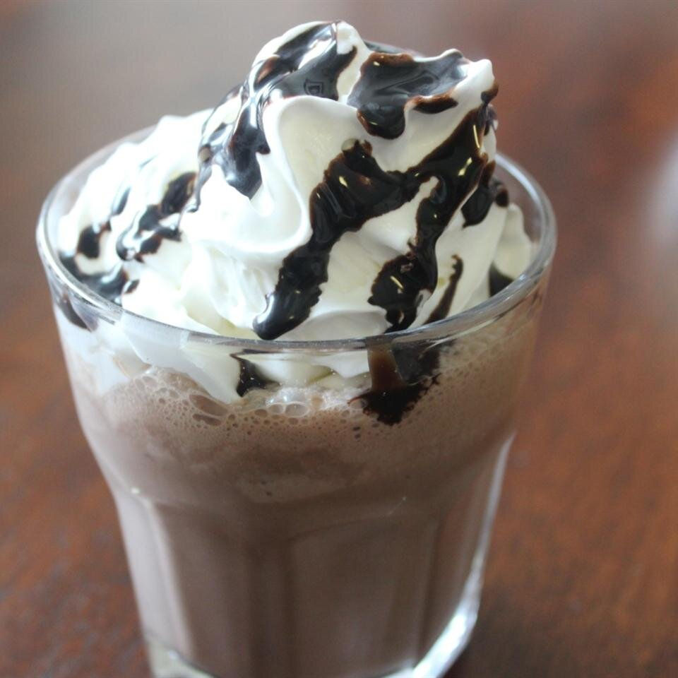

Gluten-Free Mac-n-Cheese
Back to Main

Description
The combination of coffee, chocolate ice
cream, chocolate syrup and whipped cream
makes this a perfect pick-me-up drink!
Ingredients (recipe yields 4 servings)
- 1 ½ cups cold coffee
- 1 ½ cups chocolate ice cream
- ¼ cup chocolate syrup
- crushed ice
- 1 cup whipped cream
Steps
-
In a blender, combine coffee, ice cream
and chocolate syrup. Blend until smooth.
Pour over crushed ice. Garnish with a dollop
of whipped cream and serve.